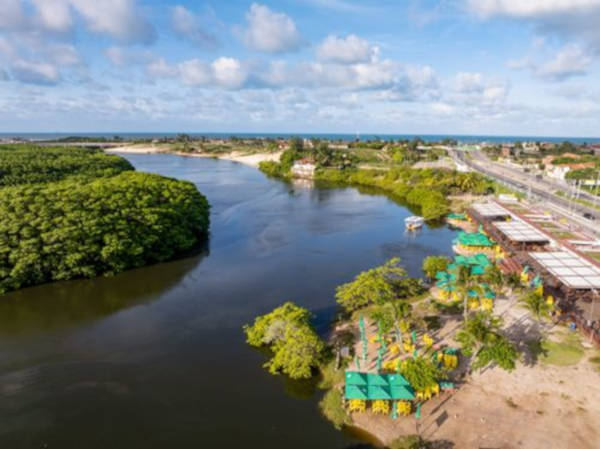

O Parque Estadual do Cantão está localizado na região oeste do Tocantins e é uma das áreas de preservação mais importantes do estado.
O parque abriga centenas de espécies de animais e plantas, formando um ambiente de grande importância para a conservação da biodiversidade brasileira.
Durante determinadas épocas do ano, a paisagem do parque muda completamente devido ao aumento do nível dos rios, criando cenários únicos.
O Parque Estadual do Cantão faz parte da região de transição entre a Amazônia, o Cerrado e o Pantanal.
Visitar a página inicial